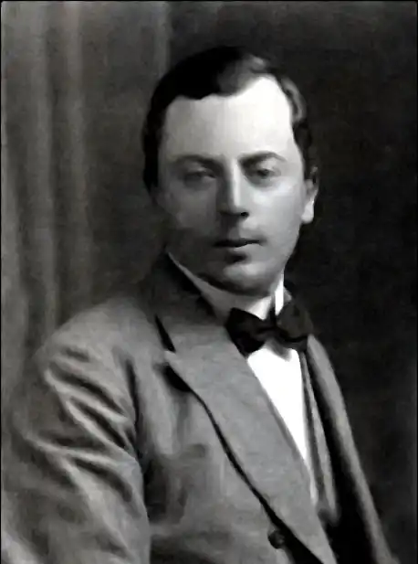
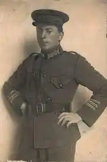

Петро Іванович Франко (1890 – 1941) – український педагог, письменник, військовий авіатор, науковець-хімік. Учасник національно-визвольних змагань 1917-1920. Співзасновник Пласту. Член Наукового Товариства ім. Шевченка. Депутат Верховної Ради УРСР 1-го скликання (з 1940 року). Син Івана Франка.
Закінчив Львівську політехніку.
Збирав фольклорно-етнографічні матеріали, писав оповідання, повісті, п'єси (зокрема комедії та інсценізації прозових творів свого батька), мемуари, підручники з фізкультури, городництва тощо. У 1911 – 1914 роках був учителем фізичного виховання у філії української Академічної гімназії у Львові. Восени 1911 року організовував у своїй гімназії пластові гуртки та проводив з ними спортивно-військові заняття. У 1913 році видав книжечку "Пластові ігри та забави". З 1914 року в ранзі поручника командував сотнею Легіону українських сечових стрільців. У часі листопадових боїв за Львів Франко з кулеметною сотнею знаходився на Високому Замку. 6 грудня 1918 державний секретар військових справ ЗУНР Дмитро Вітовський підписав наказ про формування Летунського відділу Галицької армії; командиром відділу став поручник Франко. З 1918 року сотник Петро Франко вів референтуру летунства в Начальній Команді Української Галицької Армії до її інтернування у 1920 році. 4 січня 1919 року, проводячи повітряну розвідку на північ від Львова на 2-місному "Альбатросі", Петро Франко був збитий ворожим літаком. Він та його другий пілот, старший десятник Роман Кавута (Клатва), залишилися живими, але потрапили у полон до поляків, були інтерновані у табір Домб'є; за золотий перстень Франко виміняв у вартового польський військовий однострій і втік із табору. Створений П. Франком авіаполк збив 16 польських літаків; за заслуги в організації авіації Симон Петлюра надав йому військове звання полковника. У 1922 році прибув до Відня, де займався видавничою діяльністю. У 1922 – 1930 роках – професор української гімназії в Коломиї, одночасно доїжджав до Львова, де викладав в Українському таємному університеті. У 1931 – 1936 – працював старшим науковим співробітником у науково-дослідному Інституті прикладної хімії в Харкові. Автор 36 зареєстрованих винаходів, переважно з галузі перероблення молока. 1936 – 1939 – учителював у гімназіях Львова та Яворова, викладав у торговельно-економічному інституті. У 1937 видав працю "Іван Франко зблизька". Всупереч письмового зобов'язання перед НКВС опублікував у газеті "Діло" статтю про голодомор. Під час приєднання Західної України до УРСР був обраний у жовтні 1939 депутатом Народних Зборів Західної України. У 1939 – 1941 роках працював деканом товарознавчого факультету Українського державного інституту радянської торгівлі у Львові. У 1940 році обраний депутатом до Верховної Ради УРСР. З початком радянсько-німецької війни у червні 1941 вивезений радянською владою зі Львова на схід. За одними даними, загинув 28 червня 1941 року при спробі втечі з потяга на станції Прошова біля Тернополя. За іншими – у Великому Глибочку потрапив під бомбардування нацистів та здійснив спробу втечі, однак був розстріляний конвоїром. Ще одна версія – загинув у катівнях НКВД влітку того ж року. За іншими даними – спалений енкаведистами живцем у клуні разом з іншими діячами культури 18 жовтня 1941 р. в с. Старий Салтів під Харковом за два дні до зайняття німцями Харкова. За даними шифротелеграми НКДБ СРСР № 11569 від 6 липня 1941 року, Петро Франко разом із Кирилом Студинським та Михайлом Донцем був заарештований у Києві співробітниками НКДБ СРСР за вказівкою Микити Хрущова. У цій шифротелеграмі виконавець пропонує розстріляти заарештованих у зв'язку з тим, що евакуація вищевказаних осіб із Києва може мати ускладнення, та просить надання негайних вказівок. Місце поховання невідоме. Вписаний про пам'ять на гробівці родини Франків-Галущаків на 69 полі Личаківського цвинтаря у Львові.